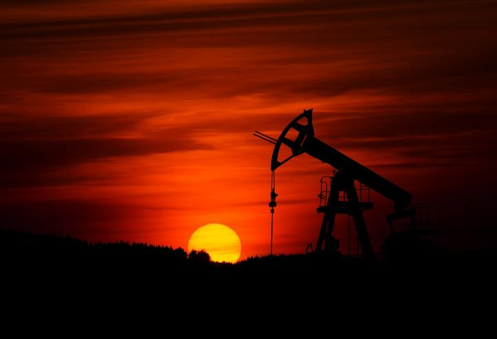

Казахстан является одной из крупнейших стран мира по добыче нефти и газа, и эти ресурсы играют значительную роль в его экономике. На нефтегазовый сектор приходится большая часть ВВП, экспорта и государственных доходов страны. Это привело к сильной корреляции между ростом нефтегазового сектора и общим ростом казахстанской экономики.
Открытие крупных запасов нефти и газа в регионе Каспийского моря в конце 1990-х и начале 2000-х годов привело к значительному увеличению иностранных инвестиций и буму нефтегазовой отрасли в Казахстане. Это привело к резкому росту ВВП страны и уровня жизни. В последние годы нефтегазовый сектор продолжал стимулировать экономический рост и помог стране пережить экономический спад, вызванный глобальными факторами.
Однако зависимость страны от нефтегазового сектора также создала некоторые проблемы. Цены на нефть и газ подвержены значительным колебаниям, что может оказать существенное влияние на экономическую стабильность страны. Кроме того, быстрый рост нефтегазового сектора иногда приводил к дисбалансам в других сферах экономики, а также к социальным и экологическим проблемам.
В последние годы правительство Казахстана предприняло усилия по диверсификации экономики и снижению ее зависимости от нефти и газа. Правительство провело реформы, направленные на поощрение предпринимательства, привлечение иностранных инвестиций и поддержку развития малых и средних предприятий. Правительство также инвестировало в инфраструктуру, образование и другие сектора для поддержки долгосрочного экономического роста.
В заключение, нефть и газ играют решающую роль в экономике Казахстана. Огромные природные ресурсы страны способствовали экономическому росту и повышению уровня жизни ее граждан. Однако зависимость страны от этих ресурсов также создает проблемы, и правительство предпринимает шаги по диверсификации экономики и содействию устойчивому росту.
Рост ВВП Казахстана: как нефть и газ влияют на экономику
Развитие нефтегазовой отрасли оказало сильную поддержку национальной экономике – доля отрасли в ВВП составила порядка 17%, что позволило стимулировать рост экономики до уровня 4,4%.
